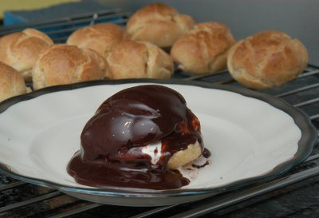

| Zutaten für 8 Personen: | |
| Brandteig: | |
| 1 dl | Milch |
| 1 dl | Wasser |
| 1 Prise | Salz |
| 10 g | Zucker |
| 75 g | Butter |
| 150 g | Weissmehl |
| 4 | Eier |
| Füllung: | |
| 3 dl | Rahm |
| Schokoladensauce: | |
| 170 g | dunkle Schokolade |
| 1 dl | Rahm |
In einer kleinen Pfanne die Milch, das Wasser, das Salz, den Zucker und die Butter zusammen aufkochen.
Die Pfanne von der Herdplatte nehmen und das Mehl im Sturz (das heisst alles auf einmal) unter kräftigem Rühren mit einer Kelle dazugeben.
Die Pfanne wieder auf die Platte stellen und auf mittlerem Feuer so lange weiter rühren bis der Teig glatt ist und sich als Kloss von der Pfanne löst.
In eine Rührschüssel umfüllen.
Nun ein Ei nach dem anderen unter den Teig rühren.
Ein Backblech leicht bebuttern oder mit Backpapier belegen.
Mit Hilfe von 2 Löffeln oder einem Spritzsack kleine Häufchen in genügend grossem Abstand - der Teig geht stark auf - aufs Blech setzen.
Die Profiteroles sofort im auf 220°C vorgeheizten Ofen während 15 Minuten backen. Während dieser Phase auf keinen Fall die Ofentüre öffnen!
Dann die Hitze auf 180°C reduzieren und das Gebäck weitere 15 Minuten fertig backen. In dieser Phase die Ofentüre leicht offen lassen.
Nach dem Backen die Profiteroles sofort vom Blech nehmen und auf einem Kuchengitter auskühlen lassen.
Kurz vor dem Servieren den Rahm steif schlagen.
Die erkalteten Profiteroles mit einer Schere aufschneiden und mit Rahm füllen. Auf Dessertteller oder einer Platte anrichten.
Den Rahm und die in kleine Stücke gebrochene Schokolade in einem Pfännchen unter Rühren schmelzen. Leicht auskühlen lassen, dann die Profiteroles damit übergiessen und sofort servieren.
Die Profiteroles mit Vanilleglace füllen.
Pro Portion: 25g Eiweiss, 65g Fett, 47g Kohlenhydrate, 844 Kalorien oder 3525 Joule
d'Chuchi Heft 3, Mai/Juni 1996 Seite 47
Am 15.1.2004 gelang dieses aufwendige Rezept sehr gut. Es ergab 21 Profiteroles die sicher als Dessert für 8 Personen gereicht hätten.
Dafür wurde es am 13.3.2010 nichts. Mit der halben Menge Zutaten gab das einen Teig mit Klümpchen der sich nach langem Rühren der Eier endlich auflöste. Die flüssige Pampe liess sich gut in den Spritzbeutel füllen aber die flachen Seelein gingen im Ofen überhaupt nicht auf. Wieso auch? Kein geschlagenes Eiweiss, kein Backpulver. Seltsam... RE
Der Teig muss also in der Pfanne lange genug und heiss genug "brennen" damit der Kleister gut klebt. Denn der Brandteig hat keine Triebmittel und geht nur deswegen auf, weil der Wasserdampf nicht entweichen kann und so Hohlräume produziert. Am 11.4.2010 ging mir der Teig sehr schön auf und die Profiteroles mit Glac&eacut;e gefüllt waren super fein. RE